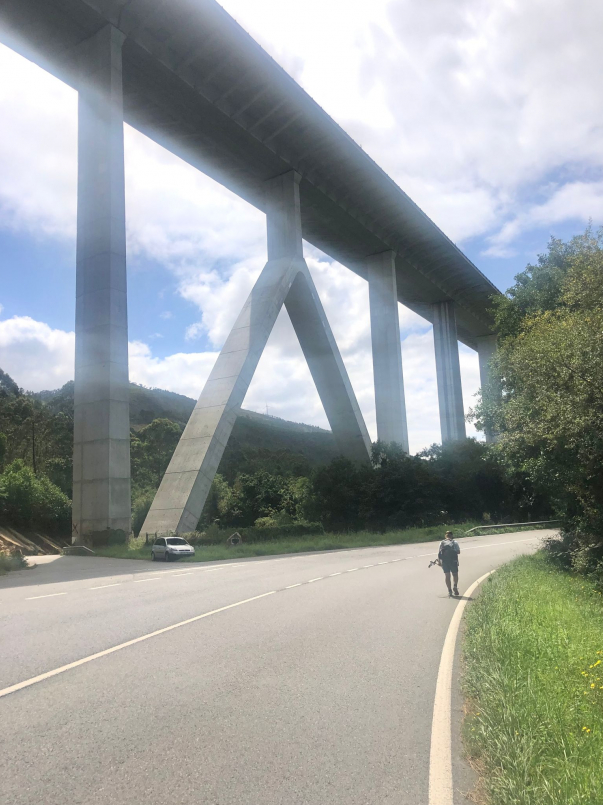
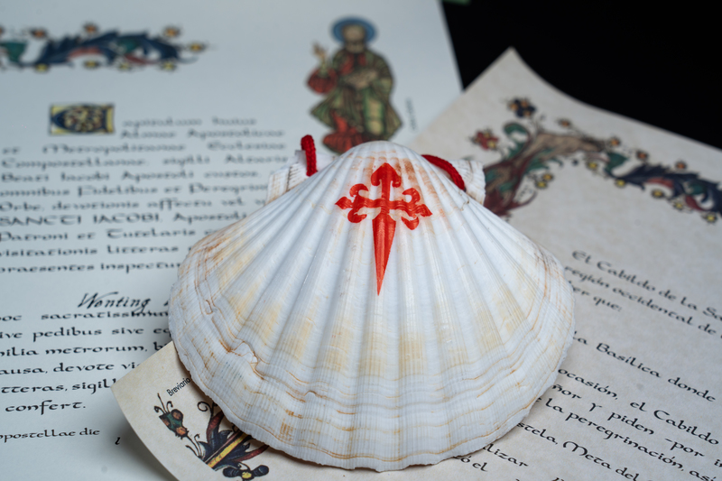
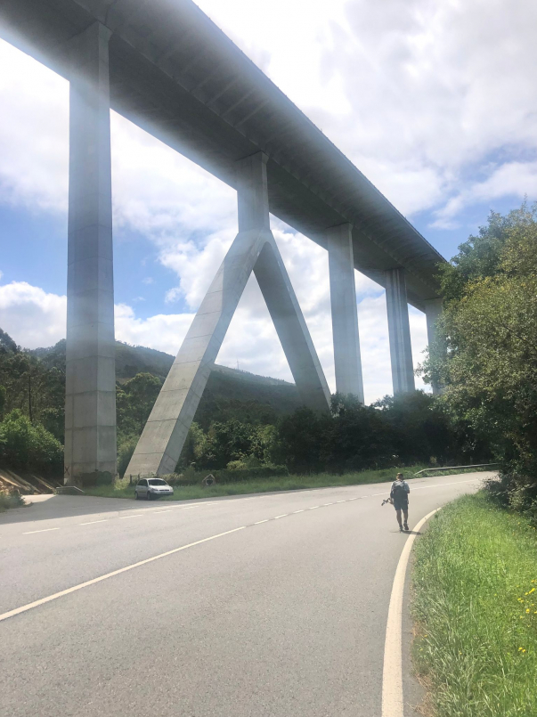
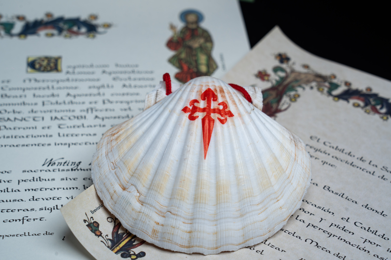
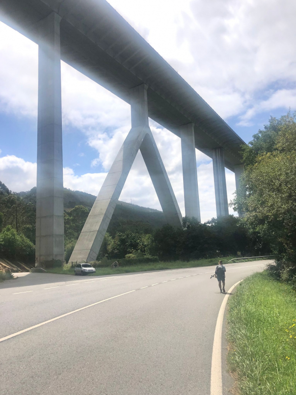
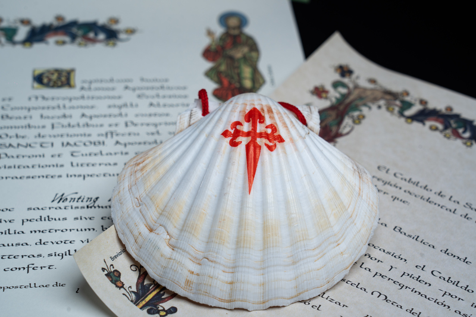
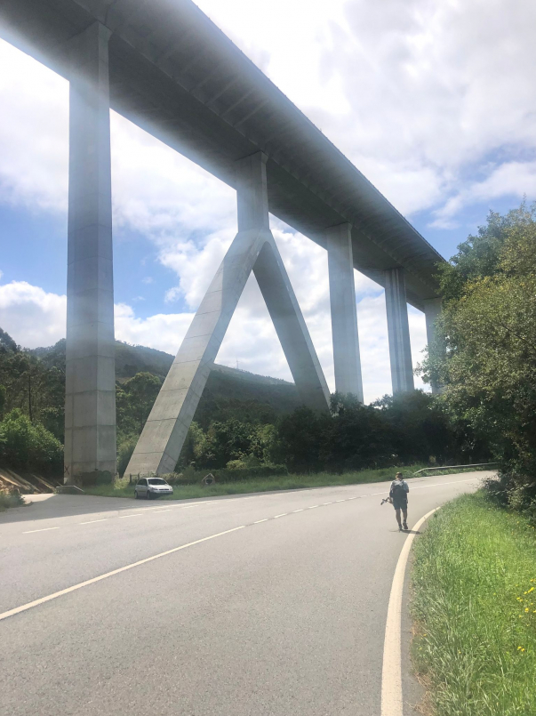
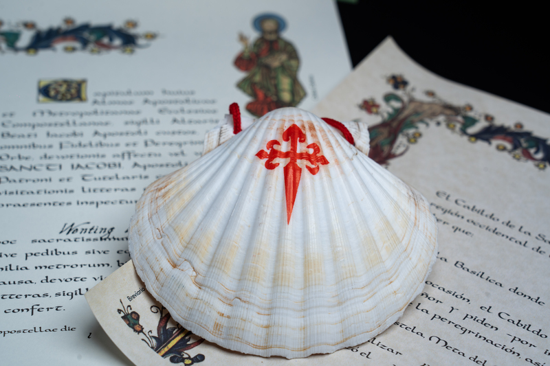

這段歷史始於1815年3月1日，當時拿破崙一世在被流放一年之後踏上蔚藍海岸的朱安海灣Golfe-Juan的海灘。
在他身旁的1200名軍人準備回到巴黎協助他們的皇帝再次登上寶座。
從這裡開始了一段為期6天行程324公里的傳奇史詩。
當時，拿破崙向阿爾卑斯山脈方向前行並且沿著騾子走的崎嶇山路，以避開保皇黨人的阻擊。
拿破崙公路Route Napoléon在1932年被正式命名，它嚴格按照這條路線的一部分修建，穿越2個地區（普羅旺斯省Provence- Alpes-Côte d’Azur，隆河-阿爾卑斯山省Rhône-Alpes）和4個縣（濱海阿爾卑斯山縣Alpes Maritimes，上普羅旺斯-阿爾卑斯山縣Alpes de Haute-Provence，上阿爾卑斯山縣Hautes-Alpes ，伊澤爾縣Isère）。
從瓦洛麗朱安海灣Vallauris Golfe-Juan海水浴療養地到卡斯泰拉恩Castellane
作為這條路的著名起點，拿破崙並未在瓦洛麗朱安海灣耽擱。
然而，這裡在每年的3月初都會再現上岸場景向拿破崙致敬。
這條道路逐漸遠離大海開始前行。從坎城到葛拉斯，沿途經過的是一系列具有典型普羅旺斯特點的村鎮。
從卡斯泰拉恩到加普，伴隨軍隊在陸地上向前推進，地勢越來越高。位於韋爾東峽谷附近的卡斯泰拉恩是在征服雷克山口col des Lèques之前的一個重要旅站。
軍隊沿著杜朗斯河Durance逐漸抵達迪尼Dignes、西斯特洪Sisteron、最終抵達地勢越來越崎嶇的加普。
行程到此時，呈現在人們眼前的是一個更加具有原始風貌的普羅旺斯地區。
從加普Gap到格勒諾伯勒Grenoble在加普，終於見到高聳的阿爾卑斯山脈。
前行數公里之後，拿破崙放心的發現他的聲望依舊如故。如果他需要守住一個地點，那麼拉福雷Laffrey就是最具象徵性的地方。
因此，他在“會合草場”la prairie de la rencontre敦促前來逮捕他的保皇黨軍隊加入他的陣營。
這次傳奇般的成功將拿破崙一路帶到巴黎。